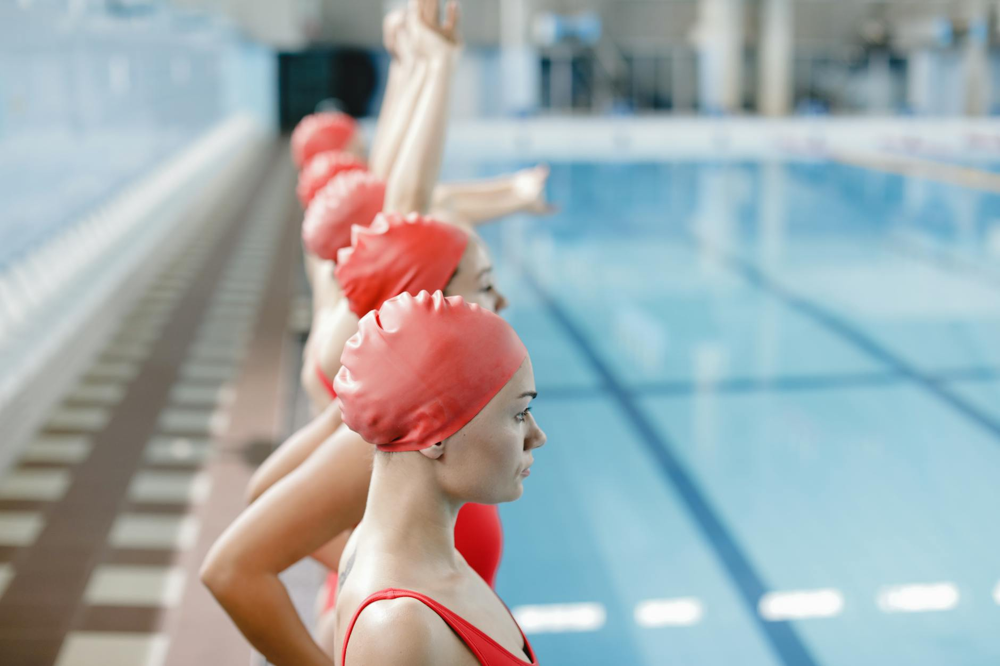

Photo: cottonbro studio via Pexels
A Championship Win Worth Celebrating
When a boys swim and dive team captures a section championship, it is never the result of a single great race or one talented swimmer. It is the product of months of early morning practices, disciplined nutrition, mental focus, and a team culture built on mutual respect and shared goals. A recent Section 2 Championship win by the Bethlehem Central School District boys swim and dive team is a perfect reminder of what young athletes can accomplish when they commit fully to their sport.
For families in Wesley Chapel, Land O' Lakes, and the broader Tampa Bay area, stories like this one are more than just inspiring headlines — they are a roadmap for what is possible right here in our own community.
Championships Are Built in the Off-Season
One of the most important truths in competitive swimming is that races are won long before a swimmer ever steps onto the starting block. The work that happens in the off-season — the technique refinement, the endurance training, the stroke development — is what separates good swimmers from great ones.
Young athletes who aspire to compete at the high school level and beyond need to start building those habits early. That means consistent practice attendance, coachability, and a genuine love for the process rather than just the results.
Key habits that championship swimmers develop early:
- Consistent technique work: Swimmers who focus on proper form from a young age build a strong foundation that supports them throughout their athletic career.
- Goal setting: Championship teams are filled with individuals who set personal time goals each season and hold themselves accountable to improving.
- Team-first mentality: Even in an individual sport like swimming, team culture matters enormously. Young athletes who encourage their teammates consistently help elevate the performance of everyone around them.
- Mental resilience: Learning to compete under pressure, handle a disappointing race, and bounce back stronger is a skill that must be practiced just like any stroke technique.
The Role of Quality Coaching and Environment
Behind every championship team is a coaching staff that believes in developing the whole athlete — not just their split times. Great coaches teach young swimmers how to compete with confidence, how to respect the process, and how to push through discomfort in pursuit of something bigger than themselves.
At Nexar Aquatic Academy, our coaches work with swimmers and water polo players in Wesley Chapel and Land O' Lakes to build exactly these kinds of foundations. We believe that the values learned in the water — perseverance, teamwork, and discipline — carry far beyond the pool and into every area of a young athlete's life.
What Tampa Bay Families Can Take Away
If your child dreams of standing on a podium one day, the time to start is now. Championship moments do not arrive by accident. They are the cumulative result of hundreds of small, intentional decisions made by athletes, parents, and coaches working together over time.
Encourage your young swimmer to embrace the grind of practice, to ask their coach for feedback, and to find joy in the small improvements that happen week after week. Celebrate the personal bests just as loudly as the first-place finishes, because those incremental gains are the building blocks of something truly special.
Nexar Aquatic Academy is proud to support the next generation of competitive swimmers and water polo players across the Tampa Bay area. Whether your child is just getting started or preparing to compete at a high school level, we are here to help them build the skills, habits, and mindset of a champion.
Ready to Start the Journey?
If you are a parent in Wesley Chapel, Land O' Lakes, or the surrounding Tampa Bay area who is looking for a supportive, high-quality aquatic training environment for your young athlete, we would love to connect with your family. Every championship story has a beginning — and it often starts with simply showing up to practice.
Ready to get in the water?
First practice is completely FREE — no commitment needed.